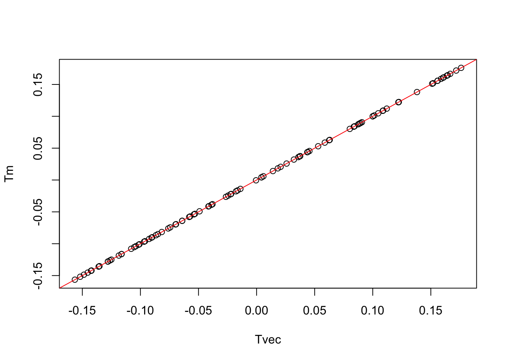
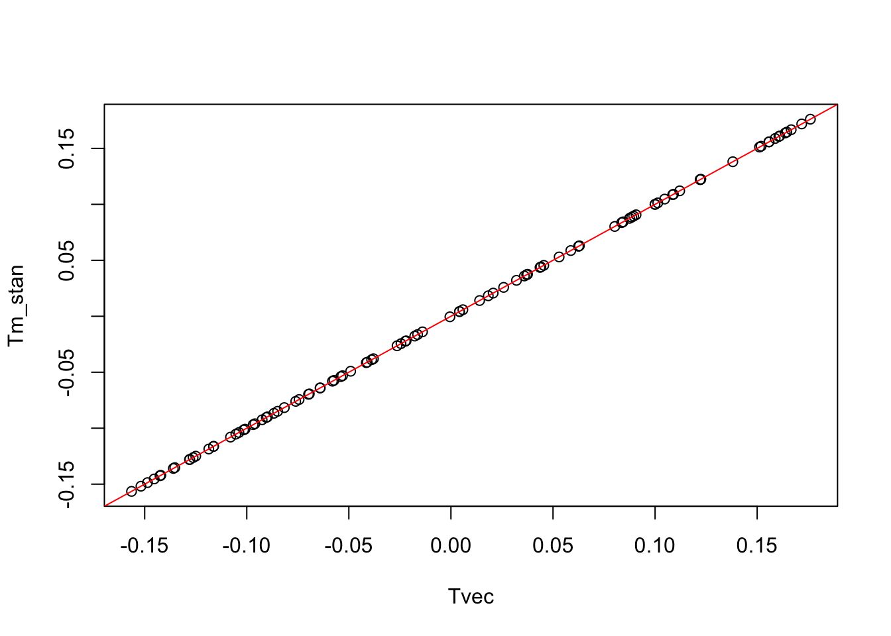
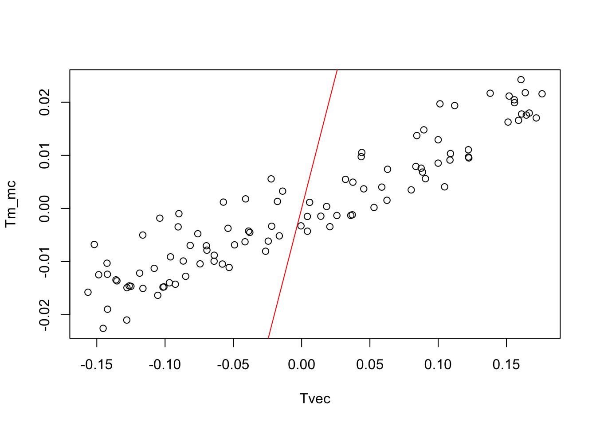
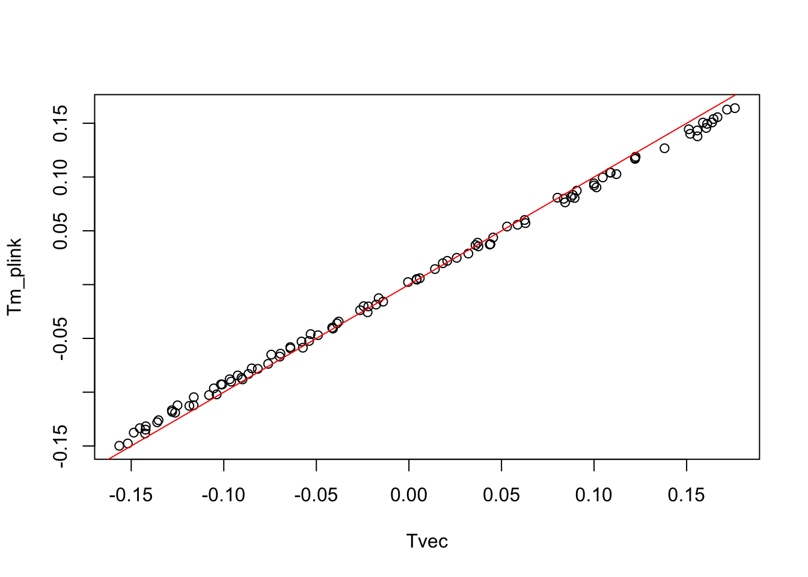
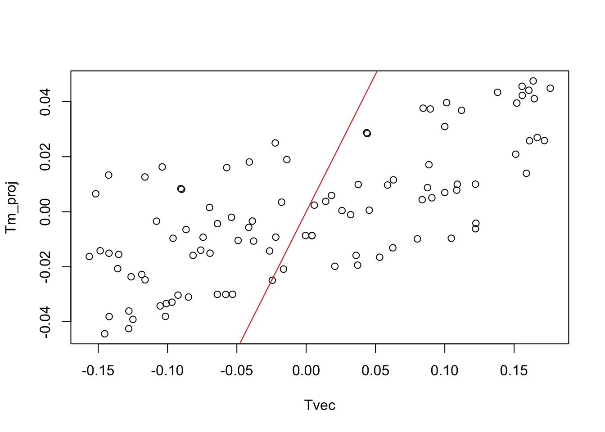
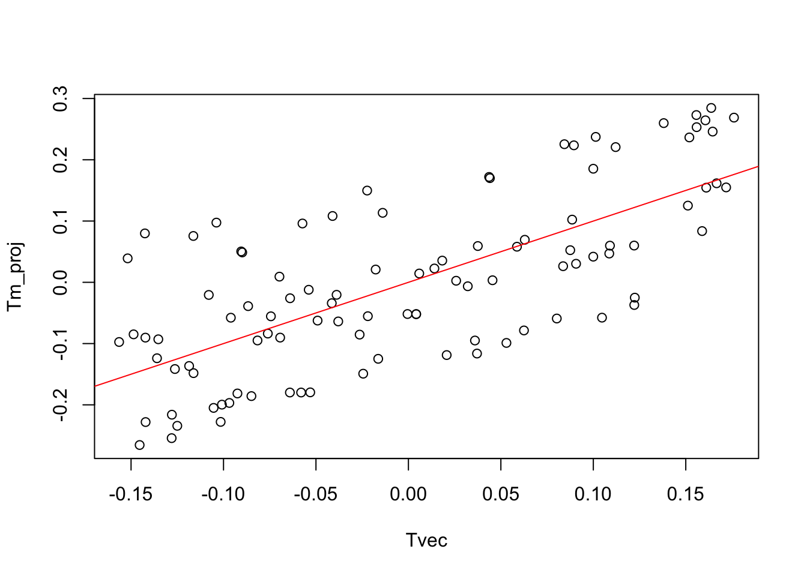

Last updated: 2021-03-04
Checks: 7 0
Knit directory: polygenic_adaptation_stratification/analysis/
This reproducible R Markdown analysis was created with workflowr (version 1.6.2). The Checks tab describes the reproducibility checks that were applied when the results were created. The Past versions tab lists the development history.
Great! Since the R Markdown file has been committed to the Git repository, you know the exact version of the code that produced these results.
Great job! The global environment was empty. Objects defined in the global environment can affect the analysis in your R Markdown file in unknown ways. For reproduciblity it’s best to always run the code in an empty environment.
The command set.seed(20201015) was run prior to running the code in the R Markdown file. Setting a seed ensures that any results that rely on randomness, e.g. subsampling or permutations, are reproducible.
Great job! Recording the operating system, R version, and package versions is critical for reproducibility.
Nice! There were no cached chunks for this analysis, so you can be confident that you successfully produced the results during this run.
Great job! Using relative paths to the files within your workflowr project makes it easier to run your code on other machines.
Great! You are using Git for version control. Tracking code development and connecting the code version to the results is critical for reproducibility.
The results in this page were generated with repository version 2d14caf. See the Past versions tab to see a history of the changes made to the R Markdown and HTML files.
Note that you need to be careful to ensure that all relevant files for the analysis have been committed to Git prior to generating the results (you can use wflow_publish or wflow_git_commit). workflowr only checks the R Markdown file, but you know if there are other scripts or data files that it depends on. Below is the status of the Git repository when the results were generated:
Ignored files:
Ignored: .DS_Store
Ignored: .Rhistory
Ignored: .Rproj.user/
Ignored: .snakemake/
Ignored: code/.DS_Store
Ignored: code/Calculate_Tm/.ipynb_checkpoints/
Ignored: data/projection_example/
Ignored: output/Calculate_Tm/
Ignored: output/PRS/4PopSplit/S3/
Ignored: output/PRS/4PopSplit/S4/
Ignored: output/PRS/4PopSplit/S5/
Ignored: output/PRS/4PopSplit/S6/
Ignored: output/PRS/4PopSplit/S7/
Ignored: output/PRS/4PopSplit/S8/
Ignored: output/PRS/4PopSplit/S9/
Ignored: output/Run_GWAS/
Ignored: output/Simulate_Genotypes/4PopSplit/S3/
Ignored: output/Simulate_Genotypes/4PopSplit/S4/
Ignored: output/Simulate_Genotypes/4PopSplit/S5/
Ignored: output/Simulate_Genotypes/4PopSplit/S6/
Ignored: output/Simulate_Genotypes/4PopSplit/S7/
Ignored: output/Simulate_Genotypes/4PopSplit/S8/
Ignored: output/Simulate_Genotypes/4PopSplit/S9/
Ignored: output/Simulate_Phenotypes/4PopSplit/S3/
Ignored: output/Simulate_Phenotypes/4PopSplit/S4/
Ignored: output/Simulate_Phenotypes/4PopSplit/S5/
Ignored: output/Simulate_Phenotypes/4PopSplit/S6/
Ignored: output/Simulate_Phenotypes/4PopSplit/S7/
Ignored: output/Simulate_Phenotypes/4PopSplit/S8/
Ignored: output/Simulate_Phenotypes/4PopSplit/S9/
Untracked files:
Untracked: analysis/genos_pca.log
Unstaged changes:
Modified: jupyter_notebooks/Matrix_Multiplication.ipynb
Note that any generated files, e.g. HTML, png, CSS, etc., are not included in this status report because it is ok for generated content to have uncommitted changes.
These are the previous versions of the repository in which changes were made to the R Markdown (analysis/projection_example.Rmd) and HTML (docs/projection_example.html) files. If you’ve configured a remote Git repository (see ?wflow_git_remote), click on the hyperlinks in the table below to view the files as they were in that past version.
| File | Version | Author | Date | Message |
|---|---|---|---|---|
| Rmd | 2d14caf | jgblanc | 2021-03-04 | projection example |
\[T_m = \frac{M X^T (XX^T)^{-1}T}{L^2}\]
M and X are mean centered genotype matrices and L is the number of sites. Here I am going to set X = M so that the genotype and test panels are the same. In this case, Tm should equal T.
GWAS <- snpStats::read.plink("../data/projection_example/genos")
X <- as(GWAS$genotypes,"numeric")
X <- scale(X, scale = F)
M <- X
L <- ncol(X)T is a test vector that is standardized so it has mean 0 and variance 1
#tvec <- c(rep(1,50), rep(0, 50))
tvec <- runif(100)
ctvec <- (tvec-mean(tvec))
Tvec <- ctvec/sqrt(sum(ctvec^2))
head(Tvec)[1] -0.142239851 -0.053907442 0.171826618 -0.135256842 0.062938278
[6] 0.005859508This is the method I started with, I know this method is “correct” because when \(M = X\), \(T_m = T\)
# Covariance Matrix
test.cov <- X %*% t(X) / L
# Eigen decomposition
eig <- eigen(test.cov)
vecs <- eig$vectors
vals <- eig$values
n <- length(vals)
# Calculate Tm
K = (M %*% t(X)) / L
Tm = K %*% vecs[,1:(n-1)] %*% diag(1/vals[1:(n-1)]) %*% t(vecs[,1:(n-1)]) %*% Tvec
# T and Tm are the same
plot(Tvec, Tm)
abline(a = 0, b =1 , col = "red")
This is identical to doing eigen decomposition on the covariance matrix as long as you square the singular values and divide by L. \(T_m\) still equals \(T\)
# Do SVD
s <- svd(X)
u <- s$u
d <- s$d
# Square singular values and divide by L
svd_vals <- (d^2 / L)
# Calculate Tm
K = (M %*% t(X)) / (L)
Tm = K %*% u[,1:(n-1)] %*% diag(1/svd_vals[1:(n-1)]) %*% t(u[,1:(n-1)]) %*% Tvec
# T and Tm are the same
plot(Tvec, Tm)
abline(a = 0, b =1 , col = "red")If you standardize the genotype matrices and calculate Tm doing eigen decomposition of the covariance matrix it also works and you get \(T = T_m\). The eigen values don’t match but as long as you multiply the pseudoinverse by the standardized genotype matrices you can recover \(T_m\).
# Standardize both genotypes matrices
X_stan <- scale(X)
M_stan <- scale(M)
# Covariance Matrix
test.cov_stan <- X_stan %*% t(X_stan) / L
# Eigen decomposition
eig_stan <- eigen(test.cov_stan)
vecs_stan <- eig_stan$vectors
vals_stan <- eig_stan$values
n <- length(vals_stan)
# Calculate Tm using standardized X and M matrices
K_stan = (M_stan %*% t(X_stan)) / L
Tm_stan = K_stan%*% vecs_stan[,1:(n-1)] %*% diag(1/vals_stan[1:(n-1)]) %*% t(vecs_stan[,1:(n-1)]) %*% Tvec
# T and Tm are the same
plot(Tvec, Tm_stan)
abline(a = 0, b = 1 , col = "red")
If you don’t multiply by the standardized version of \(X\) and \(M\), you get a Tm that’s not equal to T.
# Calculate Tm using only mean centered X and M matrices
K = (M %*% t(X)) / L
Tm_mc = K %*% vecs_stan[,1:(n-1)] %*% diag(1/vals_stan[1:(n-1)]) %*% t(vecs_stan[,1:(n-1)]) %*% Tvec
# T and Tm are the same
plot(Tvec, Tm_mc)
abline(a = 0, b = 1 , col = "red")
Same with the example above, as long as you use standardized matrices the whole way through you recover \(T = T_m\)
# Do SVD
s <- svd(X_stan)
u <- s$u
d <- s$d
# Square singular values and divide by L
svd_vals <- (d^2 / L)
# Calculate Tm
K_stan = (M_stan %*% t(X_stan)) / (L)
Tm_stan = K_stan %*% u[,1:(n-1)] %*% diag(1/svd_vals[1:(n-1)]) %*% t(u[,1:(n-1)]) %*% Tvec
# T and Tm are the same
plot(Tvec, Tm_stan)
abline(a = 0, b =1 , col = "red")I use the pca flag in plink to get the .eigenvec and .eigenval files and use those to compute the pseudoinverse. Making sure to use standardized X and M matricies, you almost get Tm back (correlation = 0.99). I’m not sure why I get different answers using plink as compared to doing eigen decompostion of the standardized genotype matrix like above since as far as I understand they should be doing the same thing. (possibly plink is automatically filtering very low frequency variants?)
# Run PCA using plink
~/Desktop/plink -bfile ../data/projection_example/genos -pca 100 --out ../data/projection_example/genos_pca# Load eigenvectos and eigen values
plink_vecs <- fread("../data/projection_example/genos_pca.eigenvec")[,3:102]
plink_vecs <- apply(plink_vecs, 2, as.numeric)
plink_vals <- fread("../data/projection_example/genos_pca.eigenval")
plink_vals <- as.numeric(plink_vals$V1)
# Calculate Tm
K_stan = (M_stan %*% t(X_stan)) / (L)
Tm_plink = K_stan %*% plink_vecs[,1:(n-1)] %*% diag(1/plink_vals[1:(n-1)]) %*% t(plink_vecs[,1:(n-1)]) %*% Tvec
# T and Tm are almost the same
plot(Tvec, Tm_plink)
abline(a = 0, b =1 , col = "red")
Extremely similar to plink (down to the 1e-5 place)
# Make GRM
~/Desktop/gcta64 --bfile ../data/projection_example/genos --make-grm --out ../data/projection_example/GRM
# Do PCA
~/Desktop/gcta64 --grm ../data/projection_example/GRM --pca 100 --out ../data/projection_example/GRM*******************************************************************
* Genome-wide Complex Trait Analysis (GCTA)
* version 1.93.2 beta Mac
* (C) 2010-present, Jian Yang, The University of Queensland
* Please report bugs to Jian Yang <jian.yang.qt@gmail.com>
*******************************************************************
Analysis started at 20:12:16 PST on Thu Mar 04 2021.
Hostname: Jennifers-MacBook-Pro.local
Options:
--bfile ../data/projection_example/genos
--make-grm
--out ../data/projection_example/GRM
Note: GRM is computed using the SNPs on the autosome.
Reading PLINK FAM file from [../data/projection_example/genos.fam]...
100 individuals to be included from FAM file.
100 individuals to be included. 0 males, 0 females, 100 unknown.
Reading PLINK BIM file from [../data/projection_example/genos.bim]...
45361 SNPs to be included from BIM file(s).
Computing the genetic relationship matrix (GRM) v2 ...
Subset 1/1, no. subject 1-100
100 samples, 45361 markers, 5050 GRM elements
IDs for the GRM file has been saved in the file [../data/projection_example/GRM.grm.id]
Computing GRM...
100% finished in 0.0 sec
45361 SNPs have been processed.
Used 45361 valid SNPs.
The GRM computation is completed.
Saving GRM...
GRM has been saved in the file [../data/projection_example/GRM.grm.bin]
Number of SNPs in each pair of individuals has been saved in the file [../data/projection_example/GRM.grm.N.bin]
Analysis finished at 20:12:16 PST on Thu Mar 04 2021
Overall computational time: 0.13 sec.
*******************************************************************
* Genome-wide Complex Trait Analysis (GCTA)
* version 1.93.2 beta Mac
* (C) 2010-present, Jian Yang, The University of Queensland
* Please report bugs to Jian Yang <jian.yang.qt@gmail.com>
*******************************************************************
Analysis started at 20:12:16 PST on Thu Mar 04 2021.
Hostname: Jennifers-MacBook-Pro.local
Accepted options:
--grm ../data/projection_example/GRM
--pca 100
--out ../data/projection_example/GRM
Note: This is a multi-thread program. You could specify the number of threads by the --thread-num option to speed up the computation if there are multiple processors in your machine.
Reading IDs of the GRM from [../data/projection_example/GRM.grm.id].
100 IDs read from [../data/projection_example/GRM.grm.id].
Reading the GRM from [../data/projection_example/GRM.grm.bin].
GRM for 100 individuals are included from [../data/projection_example/GRM.grm.bin].
Performing principal component analysis ...
Eigenvalues of 100 individuals have been saved in [../data/projection_example/GRM.eigenval].
The first 100 eigenvectors of 100 individuals have been saved in [../data/projection_example/GRM.eigenvec].
Analysis finished at 20:12:16 PST on Thu Mar 04 2021
Overall computational time: 0.02 sec.# Load eigenvectors and eigen values
gcta_vecs <- fread("../data/projection_example/GRM.eigenvec")[,3:102]
gcta_vecs <- apply(gcta_vecs, 2, as.numeric)
gcta_vals <- fread("../data/projection_example/GRM.eigenval")
gcta_vals <- as.numeric(gcta_vals$V1)
# Calculate Tm
K_stan = (M_stan %*% t(X_stan)) / (L)
Tm_gcta = K_stan %*% gcta_vecs[,1:(n-1)] %*% diag(1/gcta_vals[1:(n-1)]) %*% t(gcta_vecs[,1:(n-1)]) %*% Tvec
# T and Tm are the same
plot(Tvec, Tm_gcta)
abline(a = 0, b =1 , col = "red")I tried using GCTA (https://cnsgenomics.com/software/gcta/#PCloadingandprojection) to project the test vector into the test panel. It did not work very well, I think the problem is that –pc-loading requires both a .eigenvec and .eigenval file. So you can make a .eigenvec file where you insert the test vector instead of a PC but it still uses a .eigenval file to do the projection so its using the first eigenvalue rather that the eigenvalue that represents the amount variation explained by the test vector.
# Format Test vector
Test_vec_file <- fread("../data/projection_example/GRM.eigenvec")[,1:2]
Test_vec_file$V3 <- Tvec
write.table(Test_vec_file, file = "../data/projection_example/test_vec.eigenvec", col.names = F, row.names = F, quote = F)# Rename eigenval file to match
cp ../data/projection_example/GRM.eigenval ../data/projection_example/test_vec.eigenval
# Get SNP loadings on test vector
~/Desktop/gcta64 --bfile ../data/projection_example/genos --pc-loading ../data/projection_example/test_vec --out ../data/projection_example/test_vec_loadings*******************************************************************
* Genome-wide Complex Trait Analysis (GCTA)
* version 1.93.2 beta Mac
* (C) 2010-present, Jian Yang, The University of Queensland
* Please report bugs to Jian Yang <jian.yang.qt@gmail.com>
*******************************************************************
Analysis started at 20:12:17 PST on Thu Mar 04 2021.
Hostname: Jennifers-MacBook-Pro.local
Accepted options:
--bfile ../data/projection_example/genos
--pc-loading ../data/projection_example/test_vec
--out ../data/projection_example/test_vec_loadings
Note: This is a multi-thread program. You could specify the number of threads by the --thread-num option to speed up the computation if there are multiple processors in your machine.
Reading PLINK FAM file from [../data/projection_example/genos.fam].
100 individuals to be included from [../data/projection_example/genos.fam].
Reading PLINK BIM file from [../data/projection_example/genos.bim].
45361 SNPs to be included from [../data/projection_example/genos.bim].
Reading PLINK BED file from [../data/projection_example/genos.bed] in SNP-major format ...
Genotype data for 100 individuals and 45361 SNPs to be included from [../data/projection_example/genos.bed].
Reading eigenvectors from [../data/projection_example/test_vec.eigenvec].
1 eigenvectors of 100 individuals are included from [../data/projection_example/test_vec.eigenvec].
Reading eigenvalues from [../data/projection_example/test_vec.eigenval].
1 eigenvalues read from [../data/projection_example/test_vec.eigenval]
100 individuals in common between the input files are included in the analysis.
Calculating allele frequencies ...
Calculating SNP loading ...
Saving the PC loading of 45361 SNPs to [../data/projection_example/test_vec_loadings.pcl] ...
Analysis finished at 20:12:17 PST on Thu Mar 04 2021
Overall computational time: 0.29 sec.# Project into test matrix
~/Desktop/gcta64 --bfile ../data/projection_example/genos --project-loading ../data/projection_example/test_vec_loadings 1 --out ../data/projection_example/projectionTm_proj <- fread("../data/projection_example/projection.proj.eigenvec")
Tm_proj <- as.numeric(Tm_proj$V3)
# T and Tm are not the same
plot(Tvec, Tm_proj)
abline(a = 0, b =1 , col = "red")
I wanted to see if I could calculate \(\lambda_T\) (amount of variation explained by test vector) and use that as the eigenvalue to do the projection. It seems to “work pretty well”.
\[\lambda_T = TU \Lambda U^T T\]
# Caclulate lamba T using eigenvecs calculated in plink
T_lambda <- t(Tvec) %*% gcta_vecs[,1:n-1] %*% diag(gcta_vals[1:n-1]) %*% t(gcta_vecs[,1:n-1]) %*% Tvec
write.table(T_lambda, "../data/projection_example/test_vec.eigenval", quote = F, col.names = F, row.names = F)# Get SNP loadings on test vector - using lambda T
~/Desktop/gcta64 --bfile ../data/projection_example/genos --pc-loading ../data/projection_example/test_vec --out ../data/projection_example/test_vec_loadings
# Project into test matrix
~/Desktop/gcta64 --bfile ../data/projection_example/genos --project-loading ../data/projection_example/test_vec_loadings 1 --out ../data/projection_example/projectionTm_proj <- fread("../data/projection_example/projection.proj.eigenvec")
Tm_proj <- as.numeric(Tm_proj$V3)
# T and Tm are not exactly the same but are pretty close
plot(Tvec, Tm_proj)
abline(a = 0, b =1 , col = "red")
I need to figure out exactly what this projection step is doing to figure out why we can’t recreate T perfectly.
sessionInfo()R version 3.6.2 (2019-12-12)
Platform: x86_64-apple-darwin15.6.0 (64-bit)
Running under: macOS High Sierra 10.13.6
Matrix products: default
BLAS: /Library/Frameworks/R.framework/Versions/3.6/Resources/lib/libRblas.0.dylib
LAPACK: /Library/Frameworks/R.framework/Versions/3.6/Resources/lib/libRlapack.dylib
locale:
[1] en_US.UTF-8/en_US.UTF-8/en_US.UTF-8/C/en_US.UTF-8/en_US.UTF-8
attached base packages:
[1] stats graphics grDevices utils datasets methods base
other attached packages:
[1] data.table_1.14.0 snpStats_1.36.0 Matrix_1.3-2 survival_3.2-7
[5] workflowr_1.6.2
loaded via a namespace (and not attached):
[1] Rcpp_1.0.6 highr_0.8 pillar_1.5.0
[4] compiler_3.6.2 later_1.1.0.1 git2r_0.28.0
[7] tools_3.6.2 zlibbioc_1.32.0 digest_0.6.27
[10] evaluate_0.14 lifecycle_1.0.0 tibble_3.1.0
[13] lattice_0.20-41 pkgconfig_2.0.3 rlang_0.4.10
[16] parallel_3.6.2 yaml_2.2.1 xfun_0.21
[19] stringr_1.4.0 knitr_1.31 fs_1.5.0
[22] vctrs_0.3.6 rprojroot_2.0.2 grid_3.6.2
[25] glue_1.4.2 R6_2.5.0 fansi_0.4.2
[28] rmarkdown_2.7 magrittr_2.0.1 whisker_0.4
[31] promises_1.2.0.1 ellipsis_0.3.1 htmltools_0.5.1.1
[34] splines_3.6.2 BiocGenerics_0.32.0 httpuv_1.5.5
[37] utf8_1.1.4 stringi_1.5.3 crayon_1.4.1